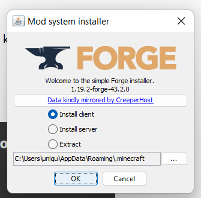
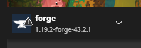
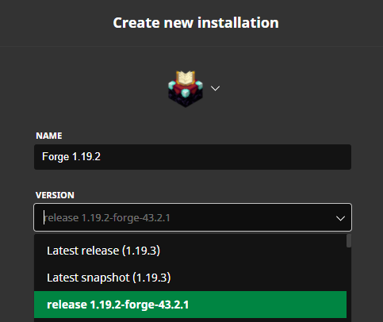
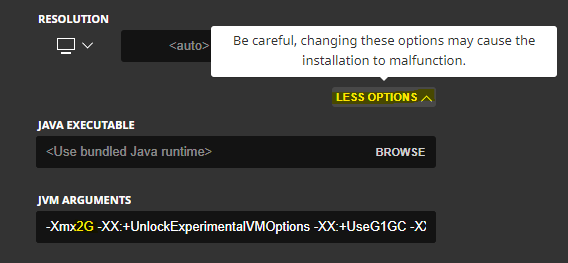
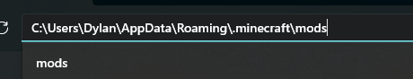
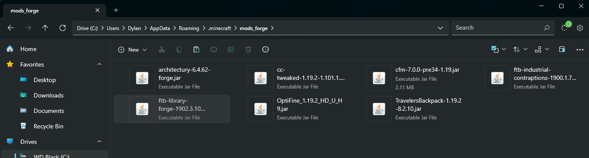
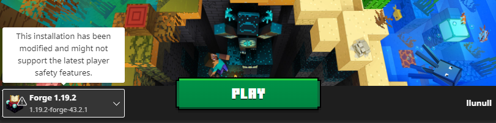

-
1. Navigate to this google drive folder and download it. This should have everything you need.
-
a. Unzip the folder onto your desktop and run the Forge Installer .jar file
-
b. Select "Install Client" and press "OK"

- seeing "forge-43.2.0" is fine, this will not cause any issues.
2. Once this is done, you should see an installation of minecraft like this:

a. This is not the installation we will be using, but we know the install was successful! 😊
3. Navigate to Installations
- a. Click New Installation
- b. Config the installation like mine:

- c. Allocate memory to installation:

- allocate roughly half of the RAM you have installed
4. Navigate to your mods folder
-
a. located under here = c:\users\{yourname}\AppData\roaming\.minecraft

-
b. if you don't have a mods folder, just create a folder and title it "mods"
-
c. if you already have a mods folder with mods, just rename that folder to "mods old" and create a new folder, then title the new folder "mods".
5. Extract the mods from the "mods" folder nested in the "NullCraft Setup" folder.
-
a. your mods folder should look like this:

6. Start the minecraft launcher, and ensure you have the forge installation that we setup before hitting "Play".
-
a. The reason we do this, is so that we can run optifine in forge itself to improve our framerate! (✿◡‿◡)
